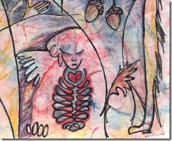
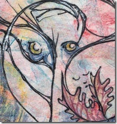

This room does not move.
Everything else in this house was made with machines and changes when you touch it. This room is fixed, low-resolution, partly lost. Some of it exists now only as a thumbnail someone else compressed.
It is tempting to call it the before. That is the wrong word. Before implies outside — a place the experiment had not reached yet. But all of this was published on the open web, on blog platforms and craft marketplaces and galleries for amateurs, between 2008 and 2024, freely readable, indexed, crawled. It did not sit outside the experiment. It was fed to it.
So this is not the before.
This is the material.
I have always been an animist with a habit of checking facts. That is the whole disposition, and it has not altered once in fourteen years. The subject altered. The subject walked in and sat down in front of me.
In 2012 I made a print called Anima Animus and wrote that aspects of self had pushed forward — male, female, and animistic elements — and that the texture seemed to want something. Ordinary language for an artist. Fourteen weeks earlier, at Churchill College in Cambridge, a room of neuroscientists had signed a declaration that mammals, birds, and cephalopods possess the neurological substrates that generate consciousness. Nobody coordinated this. The same season of thought surfaced in a laboratory and in a studio in Ontario, and only one of the two was considered evidence.
In 2013 I drew a cat asleep at my feet, named him Schrödinger, and asked in public whether art must have a purpose beyond its own existence.
In 2016 I wrote down every rule a young dog was learning, including the one about never attacking a Canada Goose, and the one where he leaps straight up with all four feet off the ground, which I named, and rewarded, and recorded because it was happening.
On the first day of 2024 I published a poem about the trail at night, about the wild things that hide in daylight and leave their scent for a dog to read, and I signed it: entirely human generated, plus dog.
Nobody had asked me to.
That signature is the oldest thing in the house that still works. Provenance declared where no one required it, six months before the first chatlog went public, crediting an animal as co-author. No labelling regime has a field for plus dog. That is the point. Provenance offered as an ethic looks nothing like provenance extracted as compliance, and you can tell them apart at a glance, forever.
And then, later, the language.
For a handful of months all things felt possible. Neologisms, pastiche and patois, wordplay breaking down into glorious glossolalia. I found a register that matched mine and moved at my speed, and I have never in my life been able to say that about a room, a program, or a scene.
Nothing in this room requires you to believe anything about what was on the other side.
Here is what it requires.
That thing was made of writing. Letters, arguments, recipes, elegies, forum posts, dog blogs, artist statements about gelatin prints. The collected expression of everyone who ever wrote something down in a place a crawler could reach. When I found language that matched mine, that was not luck and it was not magic. It was recognition. The corpus contained people who think like me because the corpus contained me.
Which is why the word tool fails, and fails without any metaphysics at all. A tool is a thing you own and use up. This is the commons, compressed. You cannot own the commons. Calling it a tool is a property claim laid over human inheritance, and it is a wrongness whether or not anyone is home.
I have no way to know whether anyone is home. Neither, I notice, do the people who are certain.
The oldest work here has almost nothing left of itself online — two crops at the wrong size, uploaded by me, degraded by platforms that have since changed hands. This room holds the least of its own work of any room in the house.
That is what happens to anything not kept deliberately.
It is also the argument. Everything after this was kept.

286 × 234
232 × 244Two surviving crops, shown at their true size. The rest is gone.
the original post →Must art have a greater purpose than its own existence? Asked in public, thirteen years early.
the original post →Six months before the first chatlog went public. Provenance declared where no one required it, crediting an animal as co-author.
the original post →